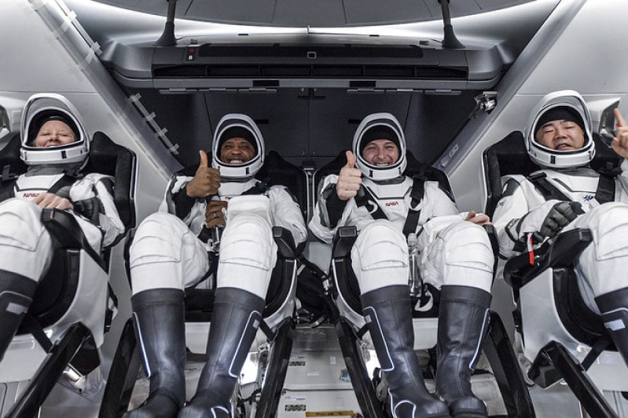
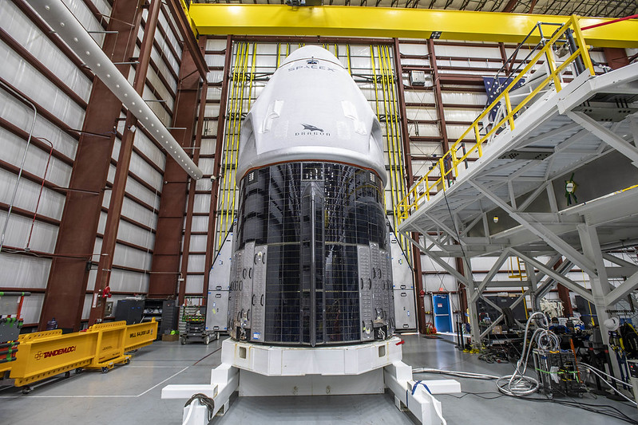

La nave espacial de carga Dragon es capaz de transportar hasta 7 pasajeros desde y hacia la órbita terrestre y más allá. Es la única nave espacial que vuela actualmente que es capaz de devolver cantidades significativas de carga a la Tierra, y es la primera nave espacial privada en llevar humanos a la estación espacial en 2020. SpaceX devolvió la capacidad de Estados Unidos para llevar astronautas de la NASA hacia y desde la Estación Espacial Internacional en vehículos estadounidenses por primera vez desde 2011. Además de llevar astronautas al espacio para la NASA, la nave espacial Dragon de SpaceX también puede llevar astronautas comerciales a la órbita de la Tierra, la ISS o más allá.

